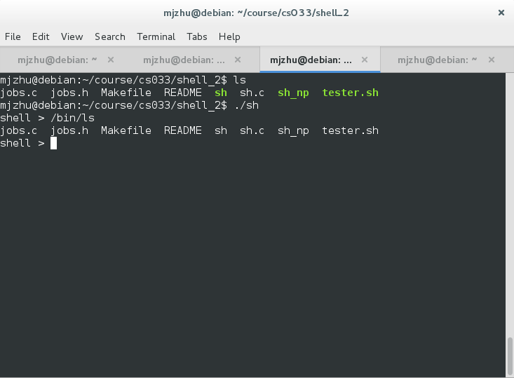
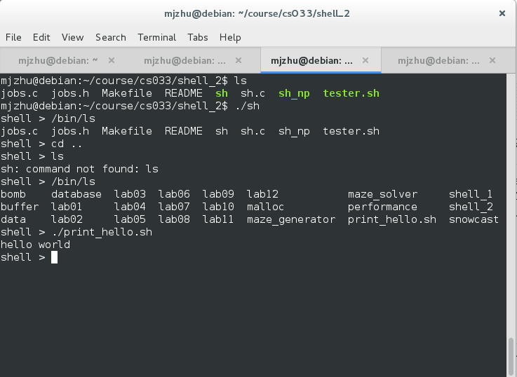
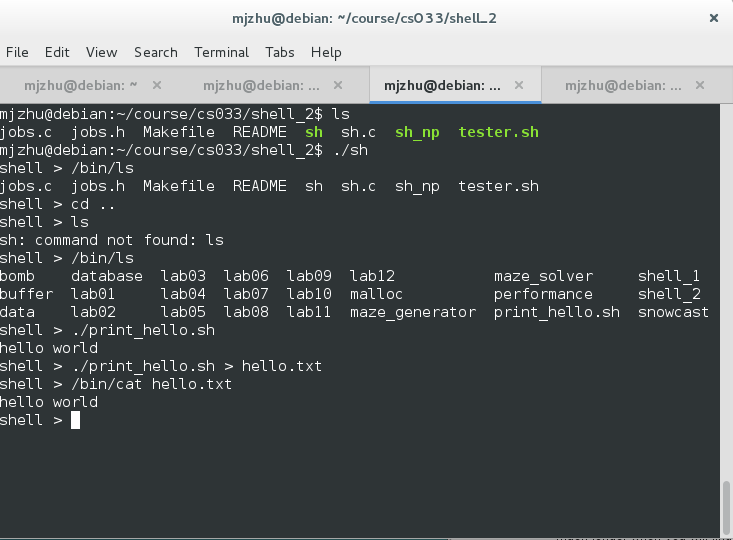
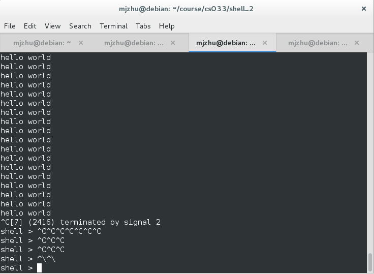
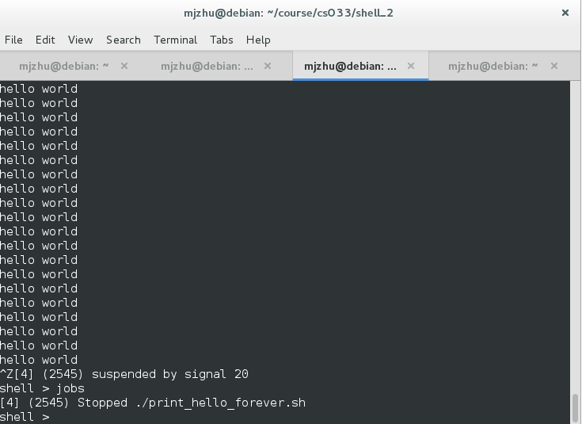
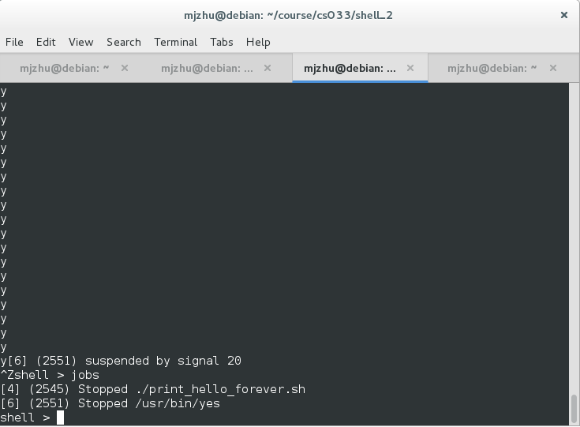
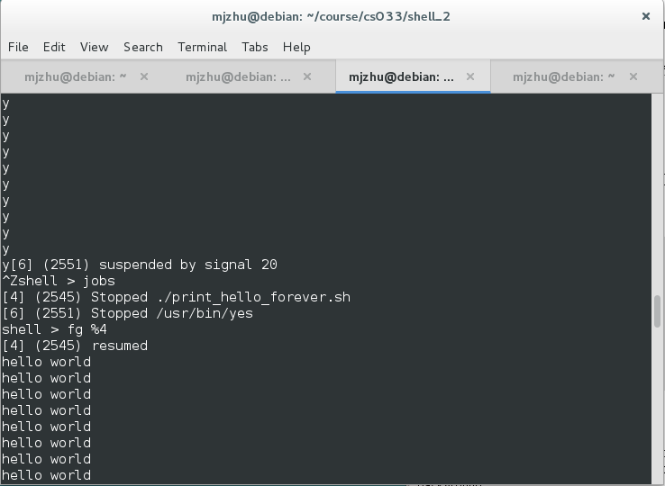
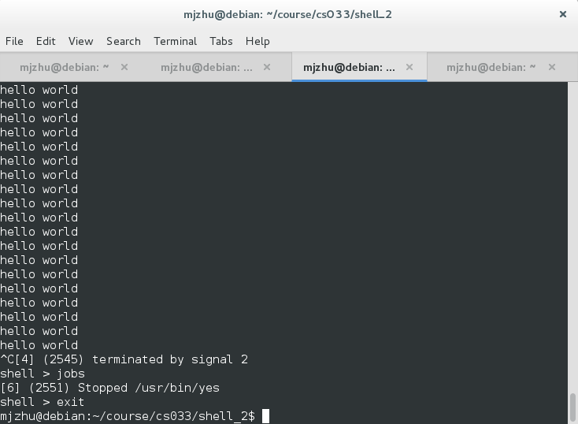

This project is an implementation of a command line shell, much like the Bourne-Again Shell that comes standard with Linux. The application was written C, and has the main funtionalities of Bash that people use. As you can see from the image above, my shell can execute files (in this case the "ls" executable). While Bash uses the $PATH environmental variable to try to find commands, my shell does not have that and the full path to the executable has to be typed out instead.

My shell can execute any sort of executable file. Here, it is executing a simple Bash script that echoes "hello world". It does this by forking a child process which uses the exec() system call to run the executable. (As a side note, feel free to ask me about any of the projects listed above in the terminal, they were all interesting, and implementing malloc in particular was the most fun)

A more advanced funtionality that my shell supports is input/output redirection. Here, you can see that the output of the previous executable into a file, and then calling cat to display the contents of the file that was just created. It is able to do this using C file descriptors.

I wrote another simple Bash script that echoes "hello world" forever to show that the shell is able to handle signals. It knows the foreground process group and redirects signals to those pids, and once there are none left it is set to ignore all signals.

In the previous image, we sent a SIGINT to the foreground process, now we send a SIGSTOP to it, and as you can see from the jobs command (which my shell natively supports), it is able to suspend the job, move it to a background process group and continue to function while keeping track of any stopped processes.

Here, we run and send SIGSTOP to the yes program, and the shell lists both the previously stopped and currently stopped programs.

Now, we can run the fg command (my shell also natively supports the bg command as well) on the print_hello_forever.sh process to bring it to the foreground again, and it starts to run normally.

Finally, we send another SIGINT signal to the print_hello_forever.sh process, and jobs correctly lists the yes program as still stopped in the background.